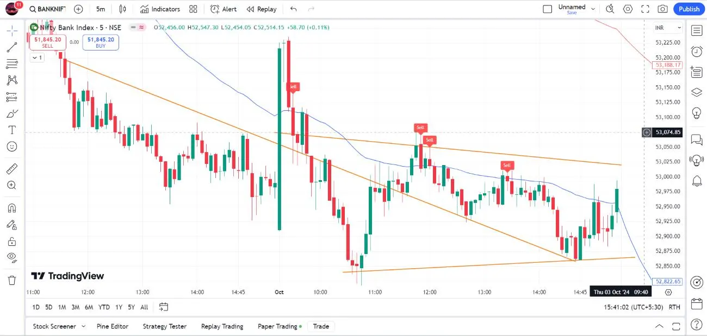
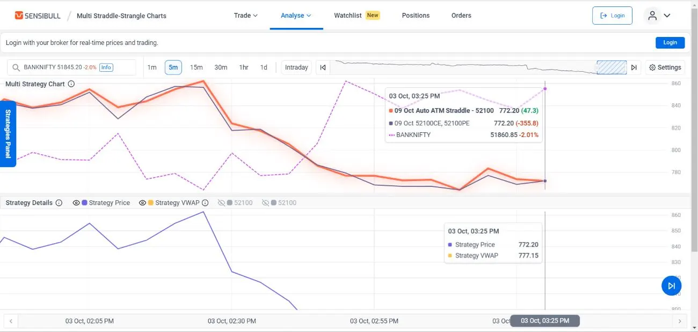
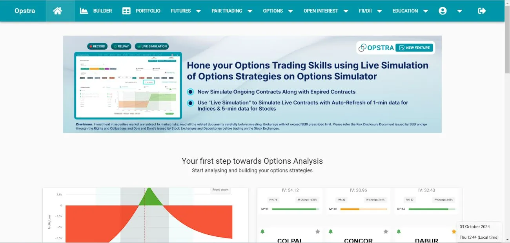
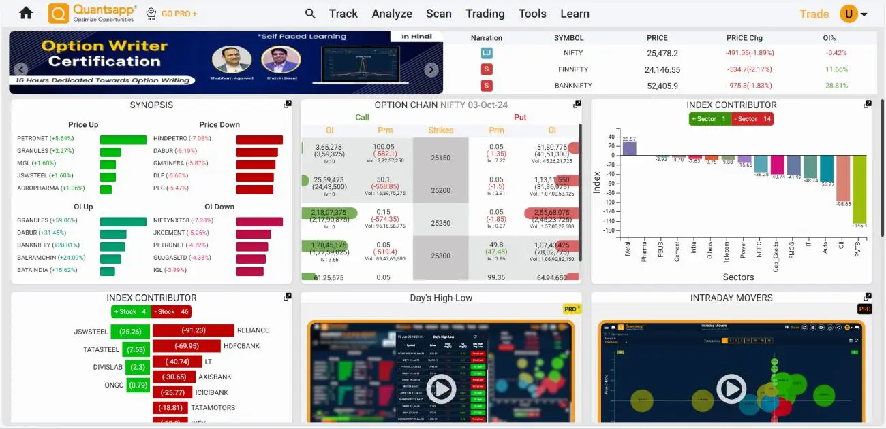
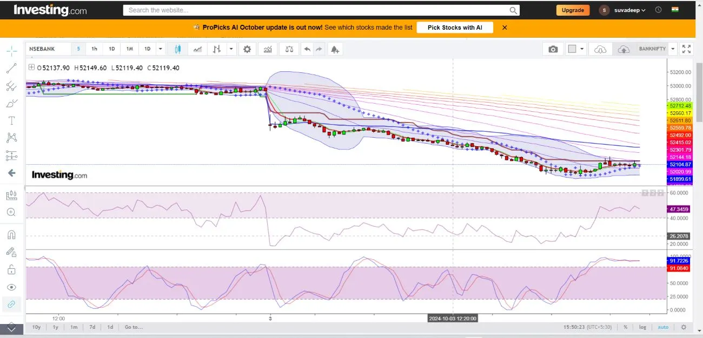

Table of Content
- 1. Trading View
- i) Key Features
- ii) Why Use Trading View
- 2. Sensibull
- i) Key Features
- ii) Why Sensibull Use
- 3. Opstra
- i) Key Features
- ii) Why Use Opstra
- 4. Quantsapp
- i) Key Features
- ii) Why Use Quantsapp
- 5. Investing.com
- i) Key Features
- ii) Why Use investing.com
- Conclusion
- Frequently Asked Questions
Best technical analysis software for indian stock market : Best Game changing treading website
Using these best technical analysis software can improve your trading skill significantly. They offer insights, help you understand market trends, and provide various strategies tailored to your needs. Whether you are just starting or have some experience, these platforms can make trading and investing more accessible and informed.
1. Trading View the best technical analysis software
Trading View is a powerful online best technical analysis software platform that helps traders and investors analyse financial markets.
It helps its users create detailed charts, get insights into market trends, and connect with other traders.

Key Features
i) Indicators
It has indicators, which are inbuilt tools. You can understand the market trend by using them. For example, moving averages, super trend, MACD help you see average price and trend over a particular time.
ii) Charts
You can make different types of charts line, bar, and candlestick charts to see the prices of stocks over time.
iii) Customization
You can have your charts and layouts to go about however you want, so you don't miss the information that really interests you.
iv) Alerts
You can set alerts to notify you when a stock touch a price or meets specific conditions.
v) Community
There is a huge community of traders who share their ideas, strategies, and charts with you. You can even follow other traders and investors and learn from their experiences.
Why Use Trading View
Trading View is perfect to present data and knowledge acquired from a community of traders. It is user-friendly and it suitable for beginners.
2. Sensibull

Sensibull is an options trading best technical analysis software platform in india that specifically designed for the Indian stock market. It simplifies the process of trading and making it easy to manageable for beginners and pro traders.
Sensibull provides many tools and resources for treading to understand and engage with options trading.
Key Features
i) Risk Analysis
The platform provides you with an assessment of the risks you face in your options trades. In this way, you can make informed decisions accordingly.
ii) Options Strategies
Sensibull offers many trading strategies made for options treading. In this way, you can choose the right approach for your trades.
iii) User-Friendly Design
The website is user-friendly, so you can easily find the tools and information.
iv) Educational Resources:
Sensibull offers market tutorials and market guides to help you learn about options trading. This is perfect for beginners who want to understand how it works.
Why Sensibull Use
If you are interested in options trading, Sensibull gives you all the tools and information you need to succeed.Sensibull is the best option analysis software in india
3. Opstra

The best platform which focuses on options trading, particularly for Indian markets is Opstra.
It utilizes advanced analytics and gives tools for traders who want to research even deeper into options strategies. Opstra is the best technical analysis software for new and pro traders for a boost in their trading skills.
Key Features
i) Options Strategies
Like Sensibull, it offers numerous strategies options for trading on options, which makes it less confusing when choosing the right option that would fit your situation.
ii) Market Information
Opstra provides insights and analytics about the options market, helping you understand how different options are performing.
iii) Navigation
Opstra’s design is user-friendly, helping both beginners and pro traders find what they need quickly.
iv) Risk Management
The site has a risk assessment facility for your trades so you manage investments wisely.
Why Use Opstra
Opstra is perfect for traders who would want in-depth analysis of options markets and Opstra is the best option analysis software in india
4. Quantsapp

Quantsapp is a platform that combines options trading with advanced analytical tools.
It provides to traders who want to understand the complexities of options in detail and provides features to help create effective trading strategies. It is aimed at those who are serious about options trading.
Key Features
i) Live Data
You will get live market data to suit your trading needs and requirements.
ii) Advanced Analytics
Quantsapp offers in-depth analysis of options data, which can help you make better trading decisions.
iii) Customizable Tools
The platform allows you to customize various tools based on your trading preferences.
iv) Educational Content
Quantsapp includes educational resources that explain complex concepts in an easy-to-understand way.
Why Use Quantsapp
If you want advanced tools and detailed analytics for options trading, Quantsapp is a strong choice. Quantsapp another option analysis tool india. Many people says quantsapp is real time technical analysis software india.
5. Investing.com

Investing.com is a global financial website that provides a wealth of information on different markets, including stocks, commodities, currencies and cryptocurrencies.
It helps as a best resource for investors looking to stay updated on market trends and news. This is the best technical analysis software in india that all indicators free available.
Key Features
i) Charts and Tools
The website provides various charts and technical analysis tools to help you analyse market trends.
ii) Market News
Investing.com has a section for news articles, insights and analyses that keep you updated on market events.
iii) Economic Calendar
It includes an economic calendar that shows important upcoming events that might affect the markets, such as earnings reports or economic indicators.
iv) Real-Time Quotes
You can access real-time stock prices and quotes for many financial instruments.
Why Use Investing.com
Investing.com is an excellent all-in-one resource for anyone interested in different markets, making it easier to stay informed.
Short Details
| Software | Features |
|---|---|
| i) TradingView | Great for creating charts and connecting with other traders. User-friendly and powerful for visual analysis. |
| ii) Sensibull | Focuses on options trading, offering strategies and educational resources for beginners. |
| iii) Opstra | Provides detailed options analysis, perfect for those serious about options trading. |
| iv) Quantsapp | Offers advanced tools and real-time data for options traders looking for in-depth analytics. |
| v) Investing.com | A comprehensive website for real-time market data, news, and analysis across various financial instruments. |
These websites can help you become a better trader, whether you are interested in stocks, options or keeping up with market news.
Conclusion
When choosing the best technical analysis software india websites, think about what you need for your trading journey. Websites like TradingView, Sensibull, Opstra and Quantsapp offer deep analysis tools, while others like Investing.com provide essential market information.
Explore these platforms to find the ones that fit your trading style and help you make better decisionsand also check our Disclaimer page.
Frequently Asked Questions(FAQs)
What are the key features to consider when choosing technical analysis software?
When choosing technical analysis software, check user-friendly treading charts and tools that are easy to understand for beginners. Check is software offers live data and best indicators for better trading decisions. Also, make sure it has good customer support and tutorials to help you get started treading journey.
Best technical analysis software for Indian stock market free
The Best technical analysis software for Indian stock market free i)trading view, ii)sensibull, iii)opstra, iv)quantsapp, v)investing com but these software advanced version is best for analysis